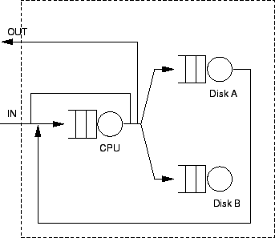

Next: ระบบเครือข่ายคิวแบบปิด:
Up: ระบบเครือข่ายคิวเปิด และระบบเครือข่ายคิวปิด
Previous: ระบบเครือข่ายคิวเปิด และระบบเครือข่ายคิวปิด
Contents
Index
(Open Queueing Networks) แสดงในรูป 6.1, งานเข้ามาในระบบที่จุด ``In'' และ ออกจากระบบที่จุด ``Out'' จำนวนของงานในระบบเปลี่ยนแปลงไปตามเวลา ในการวิเคราะห์ระบบเครือข่ายเปิด เรามักมีสมมุติฐานให้ค่าอัตราความสำเร็จมีค่าคงที่ (ในระบบที่เสถียรค่าอัตราความสำเร็จ มีค่าเท่ากับอัตราการเข้าใช้บริการ) เป้าหมายของการคำนวณคือ การหาคุณลักษณะของการกระจายของงานในคิวต่างๆ ในระบบเครือข่ายแบบเปิด
Figure 6.1:
ระบบเครือข่ายคิวแบบเปิด
|

|
Vara Varavithya
2002-03-09